A posting taken back, and the SANS line
Drawn on the real app, 5 Nov 26. Nothing is built yet. Your rulings D1693 (an undo takes its bell line back) and D1692 (the SANS purple line, not the tag).
- Q3 — the bell after "Undo post out": A or B? (pictures 7 and 8). A: the posting's line is replaced by "Posting out taken back · Saber". B, your idea: the posting's own words stay, struck through, then "taken back · Saber":
Posted out · now SANS· taken back · Saber. Either way it comes back unread, so the bell lights; once read it fades like any line, and B's strike still shows it never happened. Recommend: B. It says which posting was taken back (SANS, archived…), keeps one line a posting, and the strike is already the app's sign for "did not happen": a cancelled input's title, a refused bid on the Leave War, a hidden warning. And give the Leave War's own "taken back" lines the same look in this build, so every taken-back line in the bell looks the same: "LL approved· taken back · Saber". The rest is unchanged: an admin who had not read the line just loses it; Saber, who pressed Undo, gets nothing; a tap opens Sidewinder's row on Admin → Users. - Q2 — the SANS group's own names (pictures 3–4). With "+ SANS" on in ⚙, the SANS men at the foot of the grid wear no purple line today either. Give them the same line, so every SANS man on the grid looks alike? Recommend: yes. It is the same one change.
- Q1 — a man posted out as SANS (pictures 1–2). The "SANS" tag after his name goes; his name wears the schedule's own purple line on the right of its chip. Recommend: build as drawn.
Q1 — a man posted out as SANS, shown in his old place
Sidewinder posted out as SANS from Mon 16 Nov, with SANS off the war. On your iPhone today the tag squeezes his name to one letter, "S" (picture 1, phone). Drawn: the tag gone and the puck given the schedule's own SANS line (picture 2). On a phone a callsign this long still fades at its end ("Sidewin…"), as every long callsign on the phone's grid does; on a desktop it shows whole.
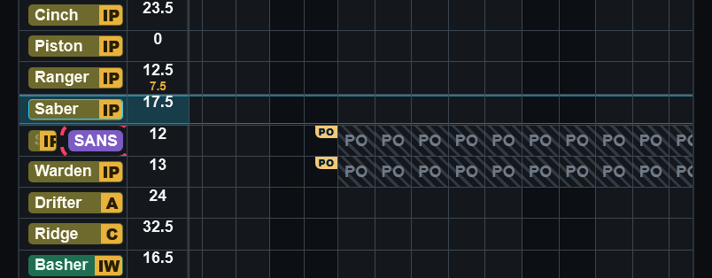
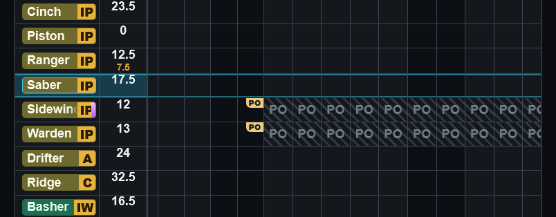
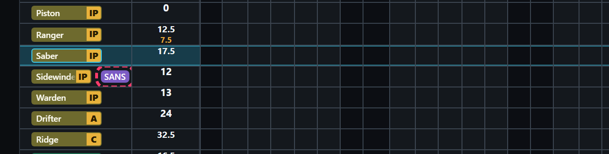
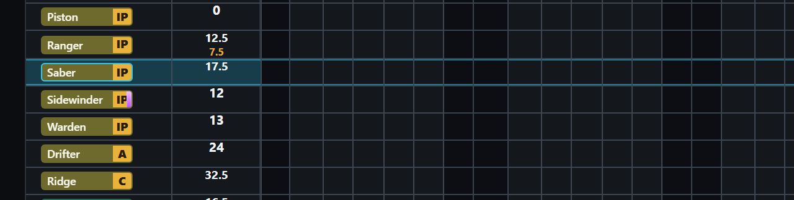
My reading: the line shows from the moment the posting is set, as the tag does today, and stays once he is SANS. With SANS on the war he moves into the SANS group on his date (your D283), so this is the SANS-off case only.
Q2 — the SANS group's own names
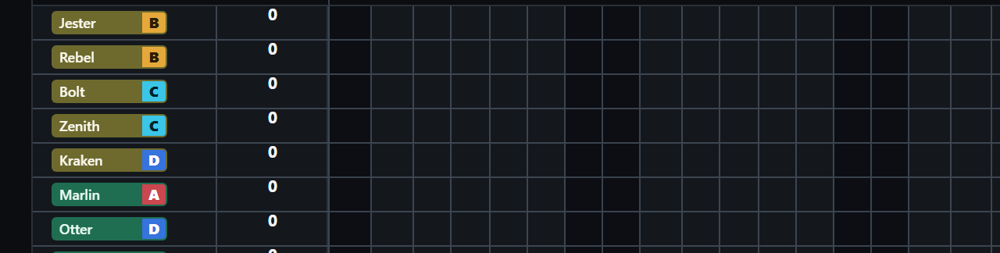
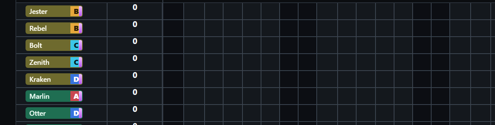
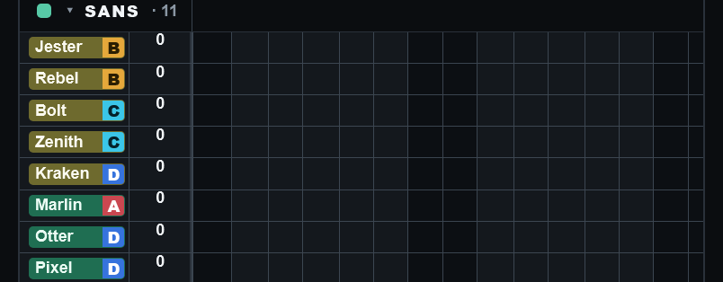
Q3 — the bell after "Undo post out"
How it was drawn: Hex made a second admin. Sidewinder posted out as SANS and Warden with no chip, both from Mon 16 Nov. The clock moved to Mon 16 Nov: both postings ran, and Hex's bell got both lines (picture 0); he pressed "Mark all read". Then Saber pressed "Undo post out (PO)" on Sidewinder's posting sheet. Warden's posting was left as it is.
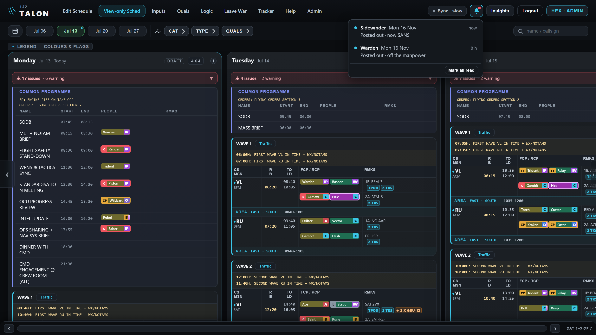
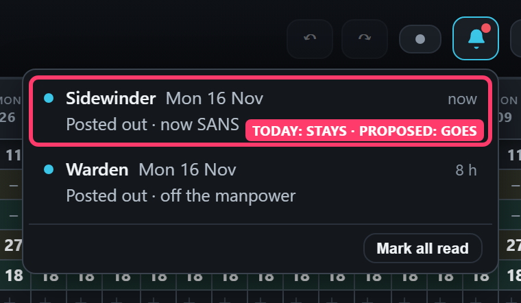
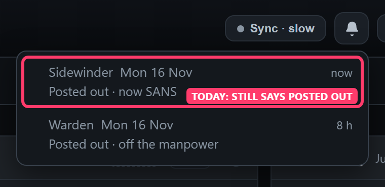
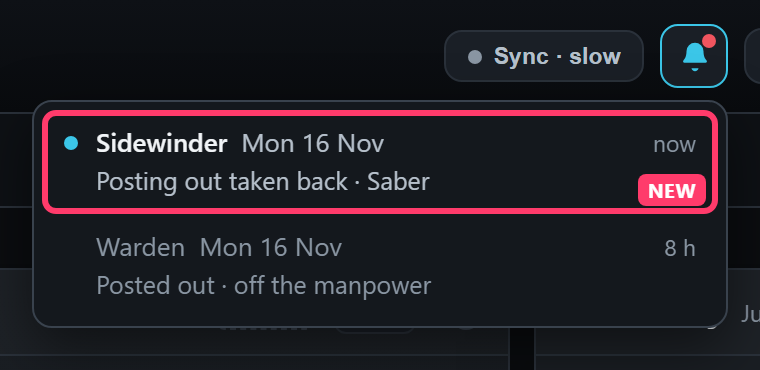
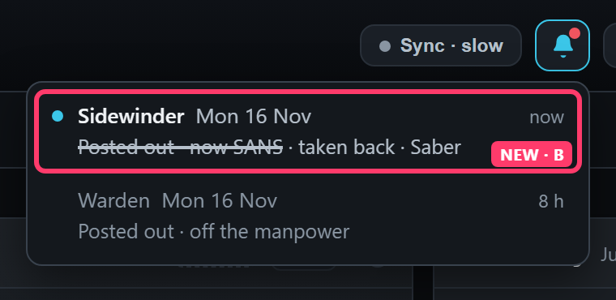
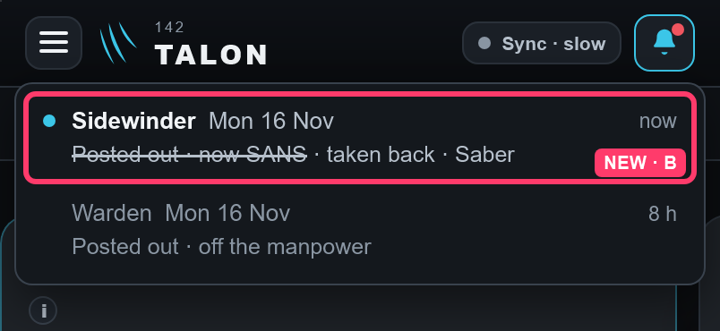
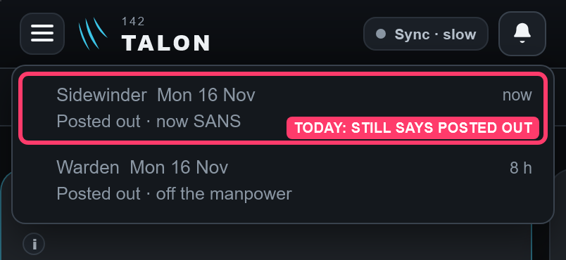
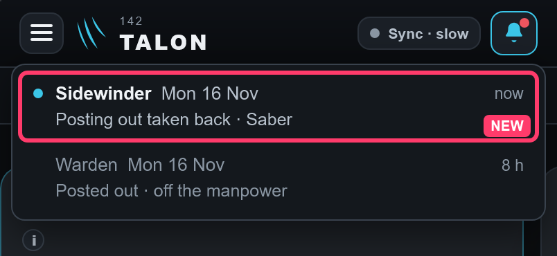
My readings, so you can correct them:
- Warden's "off the manpower" line follows the same rule when his posting is undone (your D1696): read, it becomes "taken back"; unread, it goes.
- An Overseas Sqn posting undone from its posting sheet (he comes back un-archived) is taken back the same way. A Delete cannot be undone, so its line always stays.
- Restore on Admin → Users is "he's back", not an undo of the posting: the posting's line stays there.
- Redo is not involved: "Undo post out" is a button of the posting sheet, not the top bar's Undo.
Red marks are mine: a dashed red box marks how the app is today; a solid red box marked NEW is drawn in, cloned from the bell's own line. The drawing script and its log are kept beside these pictures.